CEC 2005 Problems
MetaheuristicsAlgorithms.F1 — FunctionF1()
Sphere function.
This is a basic unimodal test function used in benchmarking optimization algorithms.
Equation:
\[f(\mathbf{x}) = \sum_{i=1}^n x_i^2\]
MetaheuristicsAlgorithms.F2 — FunctionF2()Sum of Absolute Values and Product of Absolute Values.
This is a basic test function used in optimization, combining both the sum and product of the absolute values of the input vector elements.
Equation:
\[f(\mathbf{x}) = \sum_{i=1}^n |x_i| + \prod_{i=1}^n |x_i|\]
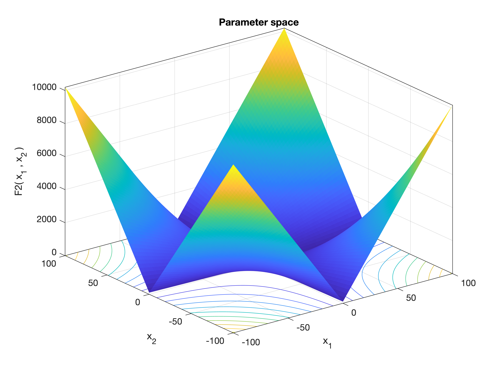
MetaheuristicsAlgorithms.F3 — FunctionF3()Cumulative Sum of Squares Function.
This test function computes the sum of the squares of cumulative sums of the input vector. It increases the dependency between variables and is used to test an algorithm’s ability to handle variable interactions.
Equation
\[f(\mathbf{x}) = \sum_{i=1}^n \left( \sum_{j=1}^i x_j \right)^2\]
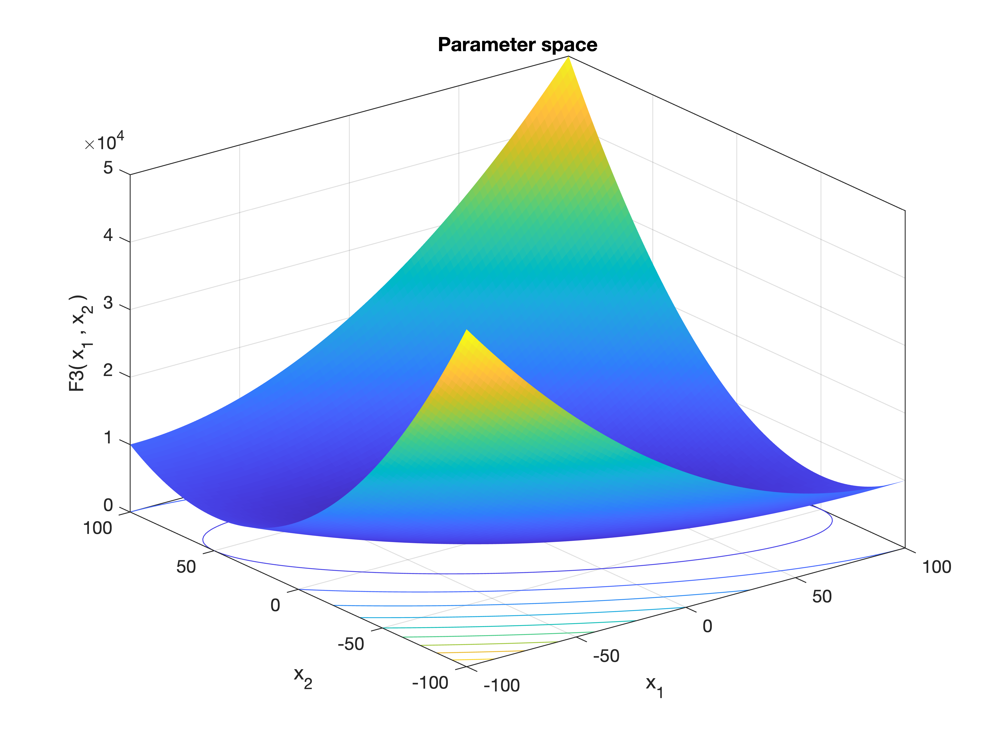
MetaheuristicsAlgorithms.F4 — FunctionF4()Maximum Absolute Value Function.
This function returns the maximum of the absolute values of the input vector elements. It is used to test an optimizer's ability to minimize the worst-case (largest-magnitude) variable.
Equation
\[f(\mathbf{x}) = \max_{1 \leq i \leq n} |x_i|\]
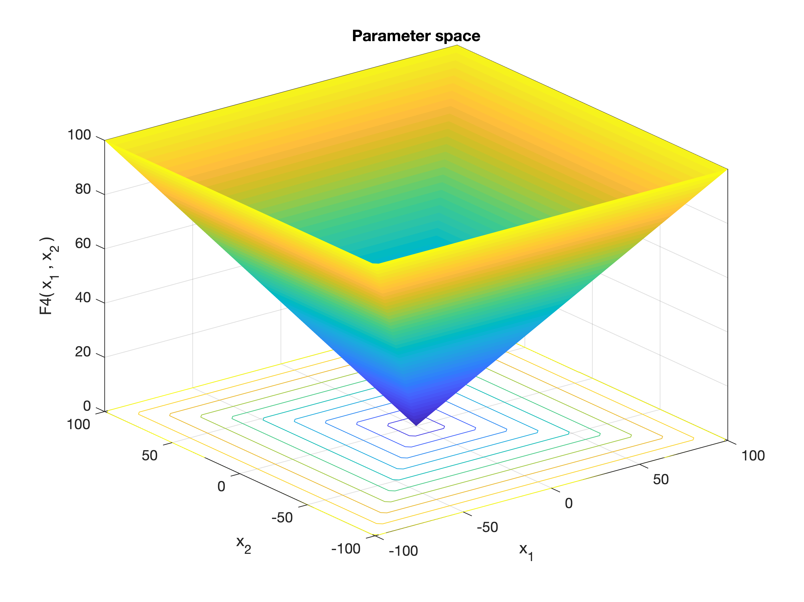
MetaheuristicsAlgorithms.F5 — FunctionF5()Rosenbrock Function.
A classic, non-convex test problem for optimization algorithms. It has a narrow, curved valley leading to the global minimum, which makes convergence difficult.
Equation
\[f(\mathbf{x}) = \sum_{i=1}^{n-1} \left[ 100(x_{i+1} - x_i^2)^2 + (x_i - 1)^2 \right]\]
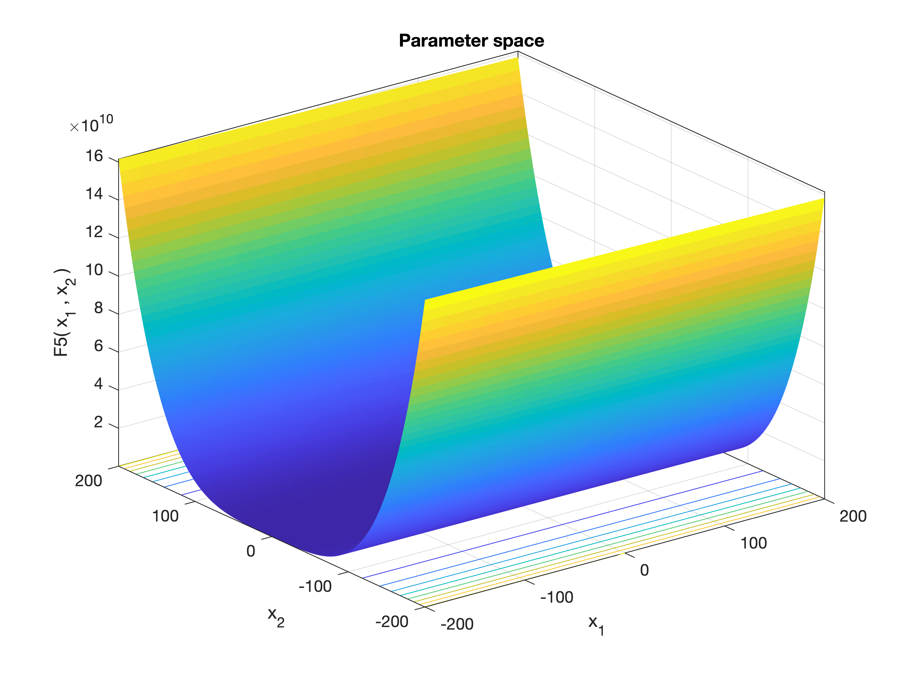
MetaheuristicsAlgorithms.F6 — FunctionF6()Shifted Sphere Function.
This function is a variation of the Sphere function where each variable is shifted by 0.5 before squaring. It remains unimodal but shifts the global minimum from the origin.
Equation
\[f(\mathbf{x}) = \sum_{i=1}^n (x_i + 0.5)^2\]
MetaheuristicsAlgorithms.F7 — FunctionF7()Weighted Quartic Function with Noise.
This function adds a random noise term to a weighted sum of the fourth powers of the input variables. The noise introduces stochasticity, making it useful for testing robustness of optimization algorithms.
Equation
\[f(\mathbf{x}) = \sum_{i=1}^n i \cdot x_i^4 + \text{rand}()\]
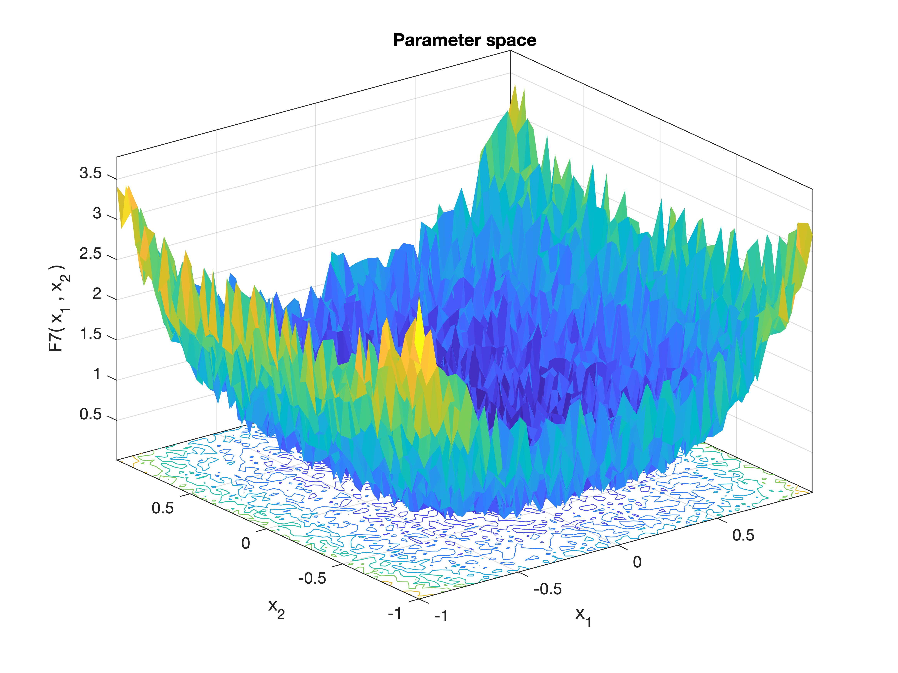
MetaheuristicsAlgorithms.F8 — FunctionF8()Schwefel Function.
A widely used multimodal benchmark function with many local minima. It poses a challenge for optimization algorithms due to its deceptive landscape and large search space.
Equation
\[f(\mathbf{x}) = \sum_{i=1}^n -x_i \cdot \sin(\sqrt{|x_i|})\]
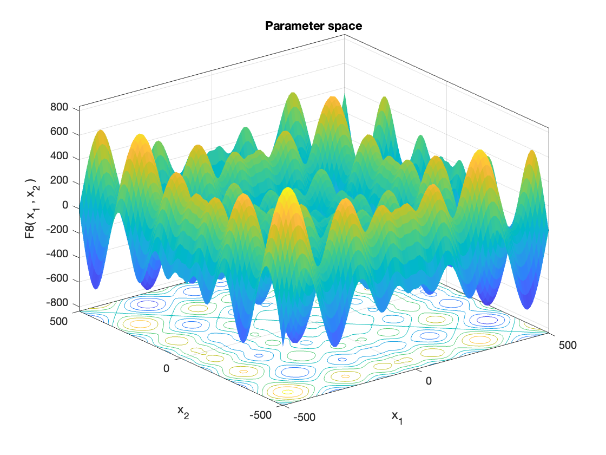
MetaheuristicsAlgorithms.F9 — FunctionF9()Rastrigin Function.
A highly multimodal benchmark function commonly used to evaluate the performance of global optimization algorithms. Its large number of local minima makes it particularly challenging.
Equation
\[f(\mathbf{x}) = \sum_{i=1}^n \left( x_i^2 - 10 \cos(2\pi x_i) + 10 \right)\]
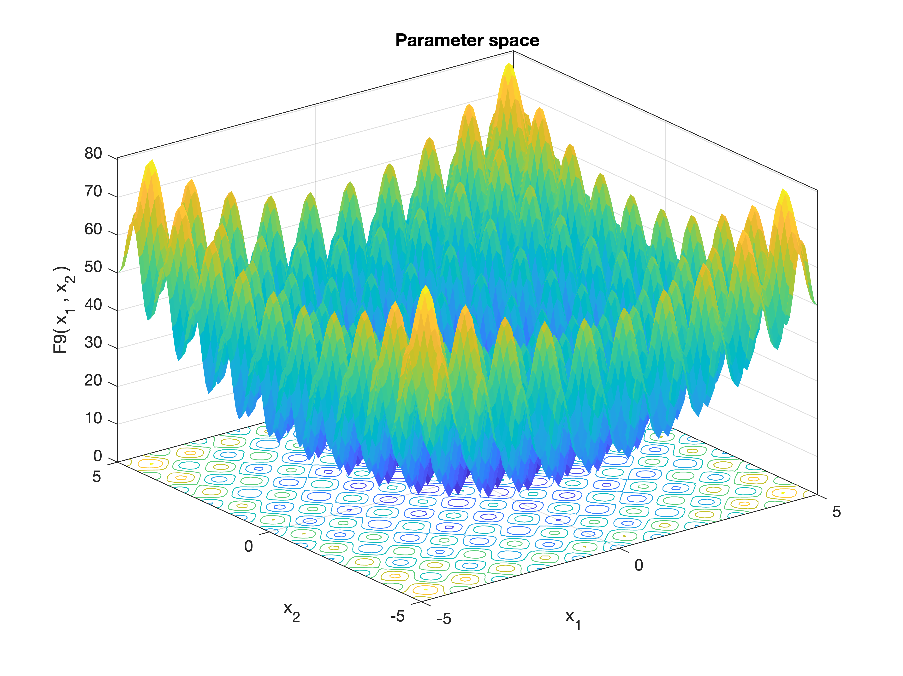
MetaheuristicsAlgorithms.F10 — FunctionF10()Ackley Function.
A popular multimodal benchmark function used to test optimization algorithms. It features a nearly flat outer region and a large number of local minima, making convergence difficult.
Equation
\[f(\mathbf{x}) = -20 \exp\left(-0.2 \sqrt{\frac{1}{n} \sum_{i=1}^n x_i^2}\right) - \exp\left(\frac{1}{n} \sum_{i=1}^n \cos(2\pi x_i)\right) + 20 + e\]
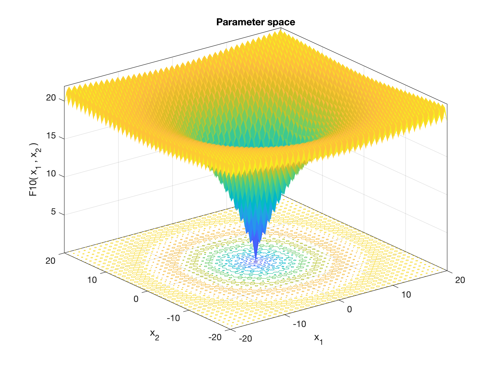
MetaheuristicsAlgorithms.F11 — FunctionF11()Griewank Function.
A widely used multimodal test function with many widespread local minima, but a simple global minimum at the origin.
Equation
\[f(\mathbf{x}) = \frac{1}{4000} \sum_{i=1}^n x_i^2 - \prod_{i=1}^n \cos\left( \frac{x_i}{\sqrt{i}} \right) + 1\]
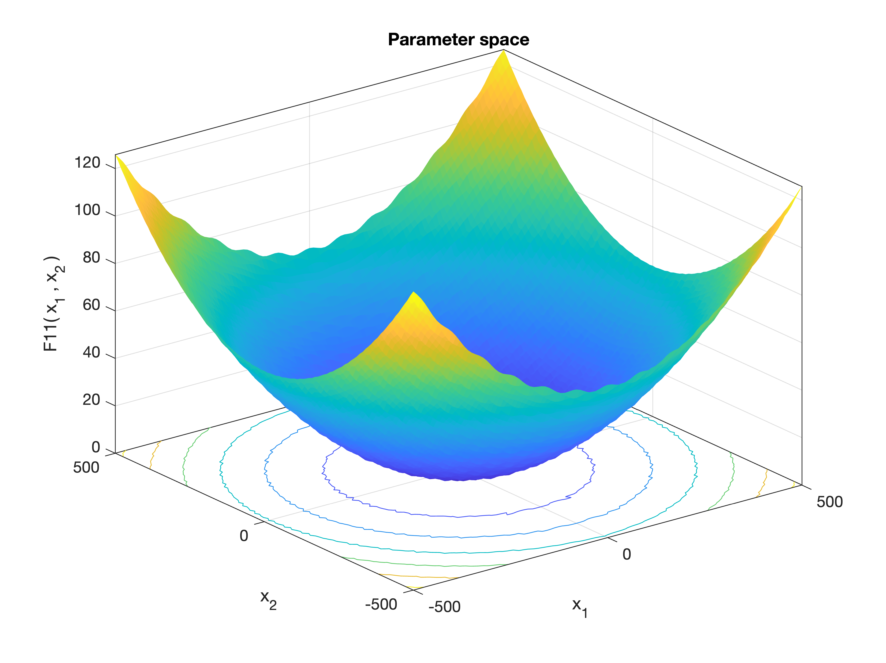
MetaheuristicsAlgorithms.F12 — FunctionF12()Penalized Function #1.
A multimodal benchmark function with penalization terms to enforce constraints, often used in optimization testing.
Equation
\[f(\mathbf{x}) = \frac{\pi}{n} \left[ 10 \sin^2 \left( \pi \left(1 + \frac{x_1 + 1}{4} \right) \right) + \sum_{i=1}^{n-1} \left( \frac{x_i + 1}{4} \right)^2 \left( 1 + 10 \sin^2 \left( \pi \left(1 + \frac{x_{i+1} + 1}{4} \right) \right) \right) + \left( \frac{x_n + 1}{4} \right)^2 \right] + \sum_{i=1}^n U(x_i, 10, 100, 4)\]
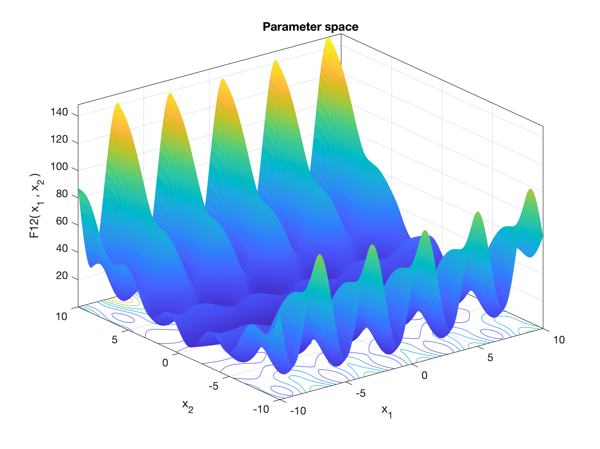
MetaheuristicsAlgorithms.F13 — FunctionF13()Penalized Function #2.
A multimodal benchmark function with penalization terms used to test optimization algorithms, featuring sine and quadratic terms.
Equation
\[f(\mathbf{x}) = 0.1 \left[ \sin^2(3 \pi x_1) + \sum_{i=1}^{n-1} (x_i - 1)^2 (1 + \sin^2(3 \pi x_{i+1})) + (x_n - 1)^2 (1 + \sin^2(2 \pi x_n)) \right] + \sum_{i=1}^n U(x_i, 5, 100, 4)\]
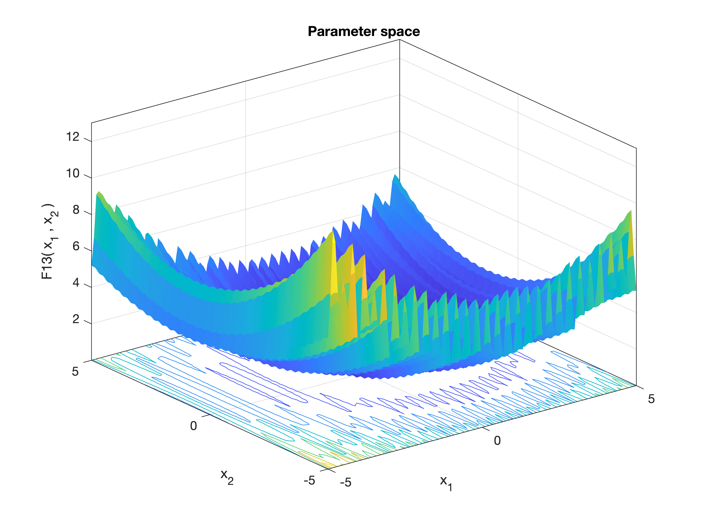
MetaheuristicsAlgorithms.F14 — FunctionF14()Shekel's Foxholes Function.
A challenging multimodal benchmark function used to test optimization algorithms. The function has many local minima, making it useful for assessing global search capability.
Equation
\[f(\mathbf{x}) = \left[ 0.002 + \sum_{j=1}^{25} \frac{1}{j + \sum_{i=1}^{2} (x_i - a_{ij})^6} \right]^{-1}\]
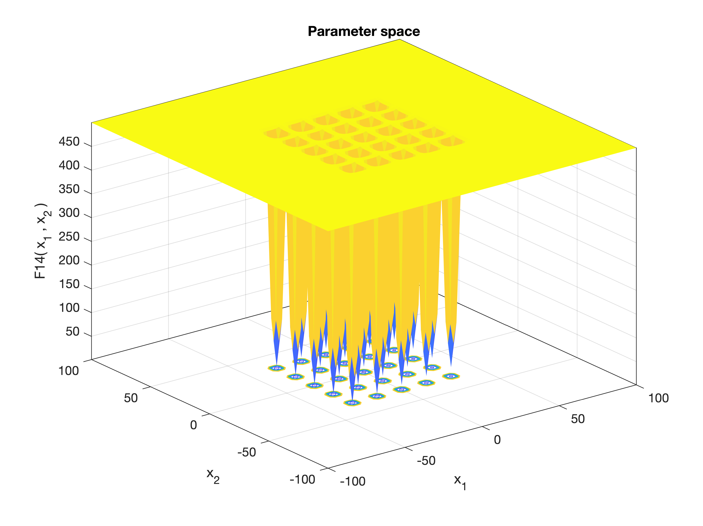
MetaheuristicsAlgorithms.F15 — FunctionF15()Kowalik and Osborne Function.
A nonlinear least squares problem used in parameter estimation and optimization. It is known for its narrow, curved valley structure, which poses a challenge for optimization algorithms.
Equation
\[f(\mathbf{x}) = \sum_{k=1}^{11} \left[ a_k - \frac{x_1 (b_k^2 + x_2 b_k)}{b_k^2 + x_3 b_k + x_4} \right]^2\]
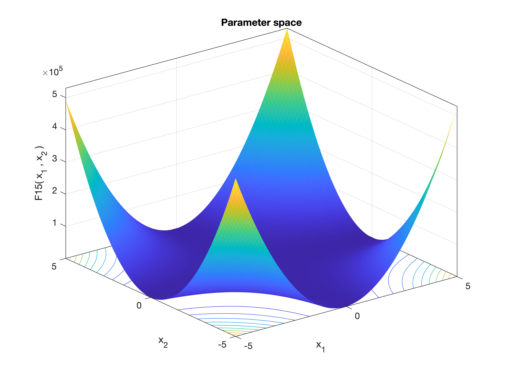
MetaheuristicsAlgorithms.F16 — FunctionF16()Six-Hump Camel Function.
A well-known multimodal benchmark function with six local minima, two of which are global. Often used to evaluate global optimization algorithms.
Equation
\[f(x_1, x_2) = 4x_1^2 - 2.1x_1^4 + \frac{1}{3}x_1^6 + x_1 x_2 - 4x_2^2 + 4x_2^4\]
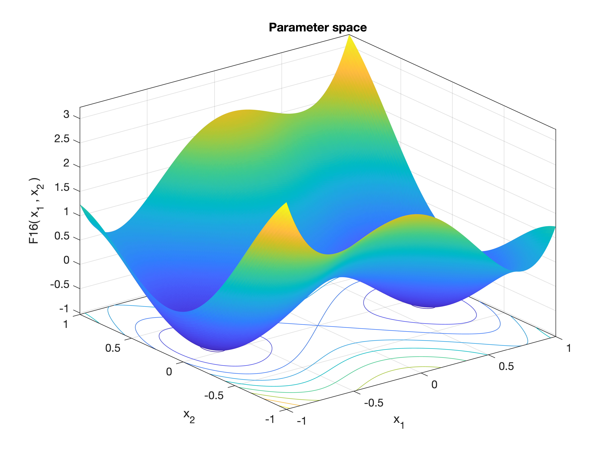
MetaheuristicsAlgorithms.F17 — FunctionF17()Branin Function (also known as Branin-Hoo Function).
A widely used benchmark function for optimization algorithms. It has multiple global minima and is commonly used for testing the performance of global optimizers in 2D.
Equation
\[f(x_1, x_2) = \left(x_2 - \frac{5.1}{4\pi^2}x_1^2 + \frac{5}{\pi}x_1 - 6\right)^2 + 10 \left(1 - \frac{1}{8\pi}\right)\cos(x_1) + 10\]
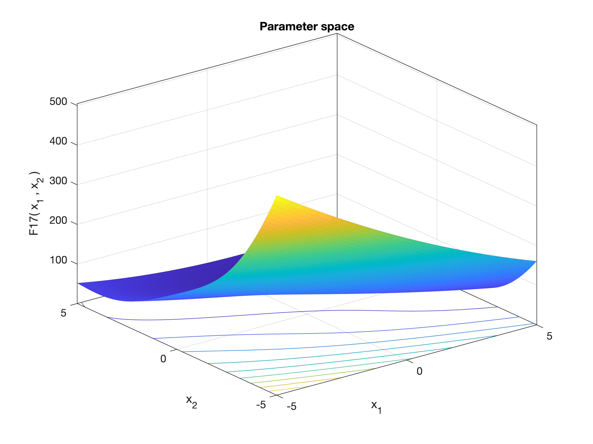
MetaheuristicsAlgorithms.F18 — FunctionF18()Goldstein–Price Function.
A classic two-dimensional test function for global optimization with a complex landscape containing many local minima and a known global minimum.
Equation
\[f(x_1, x_2) = [1 + (x_1 + x_2 + 1)^2 (19 - 14x_1 + 3x_1^2 - 14x_2 + 6x_1x_2 + 3x_2^2)] \\ \quad\times [30 + (2x_1 - 3x_2)^2 (18 - 32x_1 + 12x_1^2 + 48x_2 - 36x_1x_2 + 27x_2^2)]\]
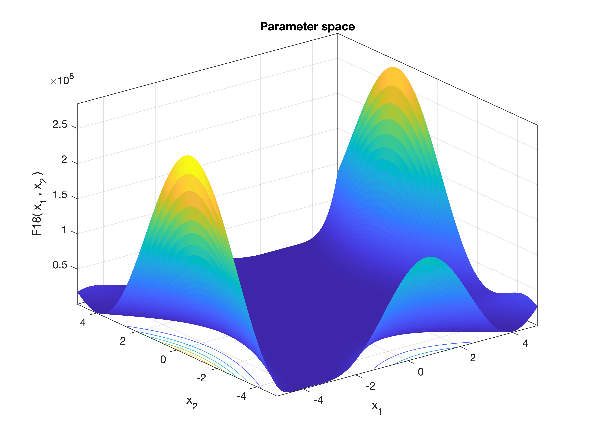
MetaheuristicsAlgorithms.F19 — FunctionF19()Hartmann 3D Function.
A common multimodal benchmark function used to test the performance of global optimization algorithms in 3 dimensions. It is characterized by several local minima and one known global minimum.
Equation
\[f(\mathbf{x}) = -\sum_{i=1}^4 c_i \exp\left(-\sum_{j=1}^3 a_{ij} (x_j - p_{ij})^2\right)\]
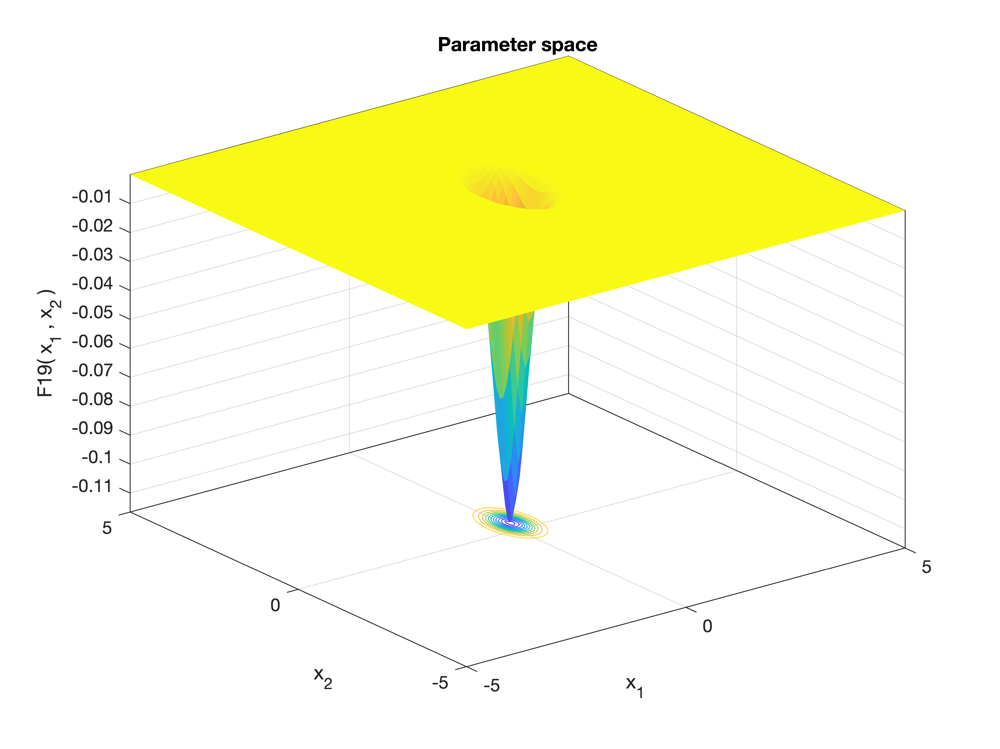
MetaheuristicsAlgorithms.F20 — FunctionF20()Hartmann 6D Function.
A widely used multimodal benchmark function in 6 dimensions for testing the performance of global optimization algorithms. It features a complex landscape with several local minima and a known global minimum.
Equation
\[f(\mathbf{x}) = -\sum_{i=1}^4 c_i \exp\left(-\sum_{j=1}^6 a_{ij} (x_j - p_{ij})^2\right)\]
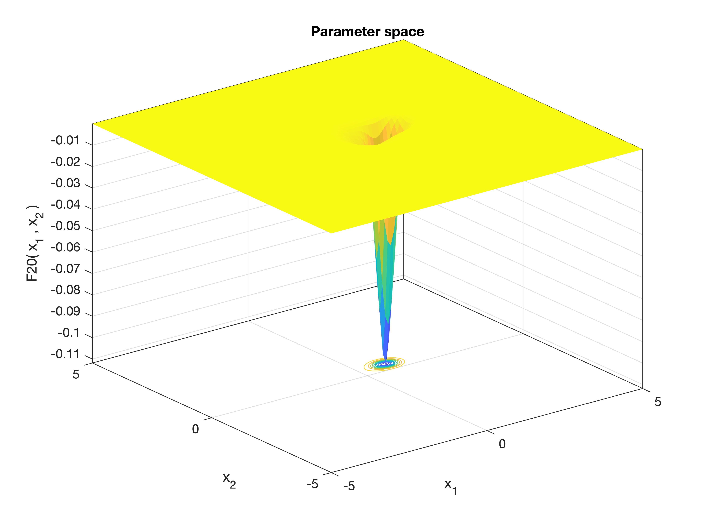
MetaheuristicsAlgorithms.F21 — FunctionF21()Shekel’s Foxholes Function (m = 5).
A multimodal benchmark function often used to test optimization algorithms' ability to avoid local optima. This version uses m = 5 terms in the summation.
Equation
\[f(\mathbf{x}) = -\sum_{i=1}^m \left[ \sum_{j=1}^4 (x_j - a_{ij})^2 + c_i \right]^{-1}\]
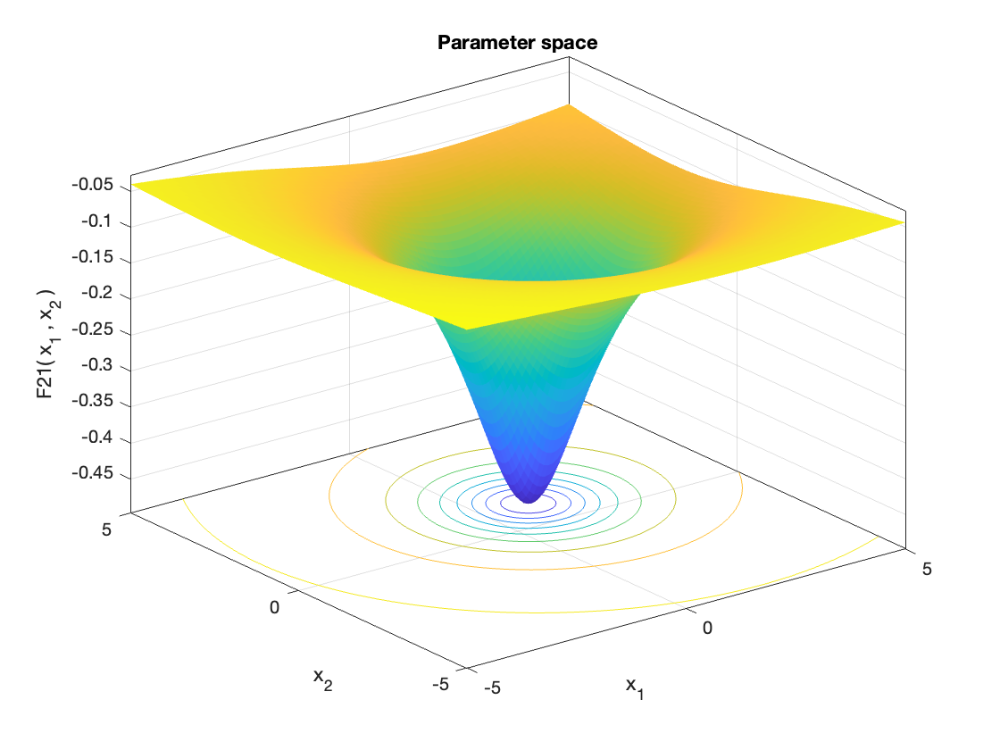
MetaheuristicsAlgorithms.F22 — FunctionF22()Shekel’s Foxholes Function (m = 7).
A multimodal benchmark function commonly used for testing the ability of optimization algorithms to navigate complex landscapes with many local minima. This is a variant of the Shekel function with m = 7 terms.
Equation
\[f(\mathbf{x}) = -\sum_{i=1}^m \left[ \sum_{j=1}^4 (x_j - a_{ij})^2 + c_i \right]^{-1}\]
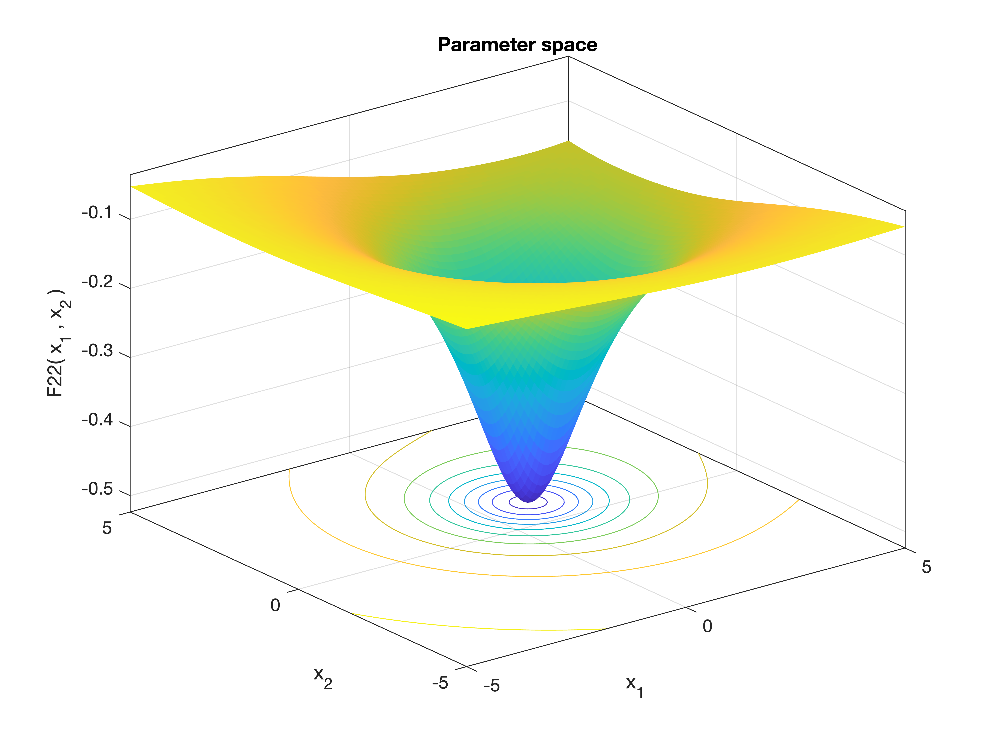
MetaheuristicsAlgorithms.F23 — FunctionF23()Shekel’s Foxholes Function (m = 10).
A classic multimodal benchmark function designed to test an optimization algorithm’s ability to avoid numerous local optima and find the global minimum. This version uses m = 10 terms in the summation.
Equation
\[f(\mathbf{x}) = -\sum_{i=1}^{10} \left[ \sum_{j=1}^4 (x_j - a_{ij})^2 + c_i \right]^{-1}\]
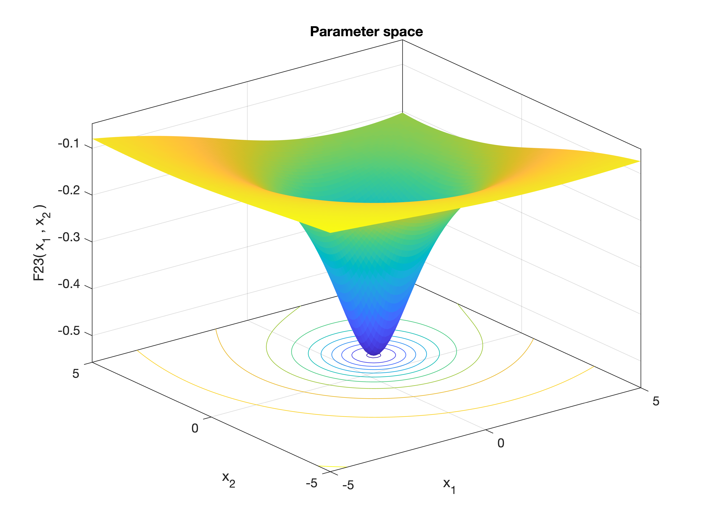